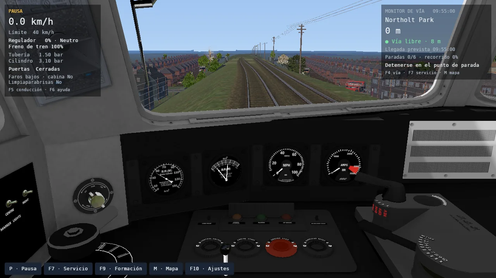

La experiencia
Desde la cabina
hasta el último andén.
Un servicio ferroviario completo: preparar la salida, conducir el tramo, detenerse en el andén y volver a partir.
La partida, desde cuatro perspectivas.

Capturas reales de openrailsrs en Chiltern. El contenido original conserva su apariencia; la compatibilidad se verifica por función y por ruta.
01 / Conducción
El tren tiene
un puesto de trabajo.
Alterná entre cabina 2D, cabina 3D y cámaras exteriores. Los instrumentos CVF, palancas, luces y animaciones usan los recursos originales del material rodante.
- Controles
- Regulador, frenos, inversor, puertas, bocina y limpiaparabrisas. Asignaciones configurables que rechazan conflictos.
- Información
- HUD de conducción, monitor gráfico de vía y diez páginas de diagnóstico. Distancia a la próxima parada, límite y señal por delante.
- Operaciones
- Formación, frenos de mano, mangueras, desacople de una sección asegurada y reacople en el mismo recorrido.
02 / El mundo
Un paisaje que
continúa con vos.
Vías, terreno, edificios, vegetación, caminos y señales proceden del contenido MSTS/Open Rails. Los sectores se cargan mientras el tren avanza y cambian de detalle con transiciones.
La iluminación sigue la hora y el entorno. Hay estrellas en noches despejadas, faros sobre la vía, niebla, lluvia y nieve. La nieve cubre el terreno y las superficies del tren; los edificios conservan sus texturas y techos. La luz interior de cabina se alterna con I. El vidrio recibe precipitación y el limpiaparabrisas despeja su barrido.
Podés usar la hora actual del lugar y su clima estimado por Open-Meteo, con fecha y zona horaria de la ruta. Ambos son opcionales e independientes: conservás la elección manual. Las tormentas añaden rayos ramificados, destellos breves y truenos que llegan después de la luz.
El clima ofrece cálculo GPU, CPU o mixto. El renderizado por software es una alternativa para equipos sin GPU utilizable, con una pérdida importante de fluidez.
Elegir cómo ejecutarlo03 / El servicio
La llegada también
es parte de la partida.
Detenete dentro del punto de parada, abrí las puertas y completá el embarque. El HUD separa la carga de pasajeros de la espera de horario.
Dos servicios de tráfico comparten el reloj y afectan la ocupación y las señales. Podés guardar el estado del jugador y del tráfico, retomarlo y completar las seis estaciones.
Pruebas manuales, función por función